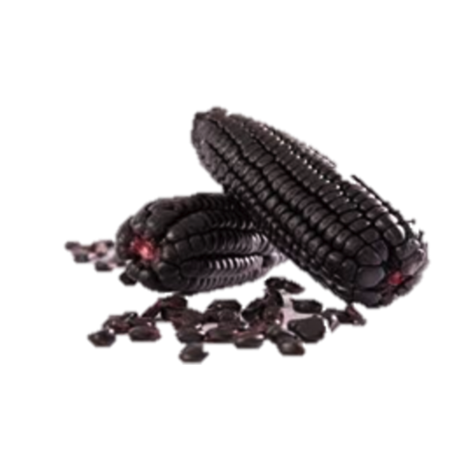

14 Maíz morado
14.1 (Zea mays)

Ana Lucía Mayorga(1), Ana M. Pérez(1)
(1)Centro Nacional de Ciencia y Tecnología de Alimentos (CITA), Universidad de Costa Rica
Autor para correspondencia: ana.perez@ucr.ac.cr
14.2 Características agronómicas
14.2.1 Taxonomía
El maíz (Zea mays L.) es originario de América, pertenece a la familia de las Poáceas (gramíneas), tribu Maydeas, y es la única especie cultivada de este género con gran importancia económica (Bonilla-Morales, 2008). El maíz morado, cuyo nombre en inglés es “Andean purple corn”, al que se le conoce también por el nombre más común de “blue corn” o “purple corn”, se le denomina en Costa Rica maíz pujagua. En la Tabla 1 se presenta la clasificación taxonómica del maíz morado.
| Característica | Detalle |
|---|---|
| Reino | Plantae |
| Subreino | Viridiplantae |
| Infrareino | Streptophyta |
| Superdivisión | Embryophyta |
| División | Tracheophyta |
| Subdivisión | Spermatophytina |
| Clase | Magnoliopsida |
| Superorden | Lilianae |
| Orden | Poales |
| Familia | Poaceae |
| Género | Zea L. |
| Especie | Zea mays |
| Fuente: (ITIS, n.d.). |
Evolutivamente, se han ido desarrollando distintas variedades e híbridos de maíz, con diferencias a nivel de composición, morfología, color, entre otras características. Por ejemplo, su color incluye tonos amarillos, cafés, rojos, morados, y grises con apariencia metálica, que históricamente tenían asociación directa con diferentes deidades, festivales y rituales religiosos (Staller, 2010). Las distintas coloraciones están asociadas a la concentración, el tipo y la ubicación de compuestos bioactivos como los carotenoides y las antocianinas (Győri, 2017).
14.2.2 Condiciones de cultivo
Se reportan en la literatura rendimientos por hectárea muy variables para el cultivo de maíz azul, que para zonas sin riego en México pueden oscilar desde 1.02 a 3.36 ton.ha-1 (Johnson & Jha, 1993), hasta 10.5 ton.ha-1 en maíces azules de la raza Chalqueño (Arellano, Tut, María, Salinas, & Taboada, 2003). Los rendimientos del maíz azul de polinización abierta son relativamente bajos si se comparan contra rendimientos de híbridos comerciales (Salinas-Moreno, Soria Ruiz, & Espinosa Trujillo, 2010), los cuales pueden generar de 8 a 13 ton.ha-1 (Betrán, Bockholt, & Rooney, 2000). Un trabajo en la provincia de Guanacaste, Costa Rica, reportó rendimientos de 1.61 ton/ha y 1.17 ton/ha para las variedades de maíz denominado pujagua, de color morado oscuro y rosado, respectivamente (Matarrita-Rosales & Brenes-Marchena, 2017).
Otros reportes indican que las variedades de maíz azul son sensibles a condiciones de sequía (Arellano et al., 2003). Esto reviste de gran importancia para Costa Rica, dado que la principal zona de producción actual del maíz morado es la provincia de Guanacaste, donde las condiciones agroclimáticas limitan cada vez más el suministro de agua para actividades agrícolas, requiriéndose en muchos casos contar con un sistema de riego.
La mayoría de las razas de maíz azul muestran características muy variables de la planta, incluidos los periodos de floración y la desigual altura entre plantas. Otra característica peculiar es el mayor número de tallos por planta, que muchas veces no producen mazorcas (Salinas-Moreno et al., 2010).
La localización geográfica del cultivo afecta de manera significativa el contenido de antocianinas y polifenoles totales, por lo que éste es un factor que debe ser tomado en cuenta al seleccionar un material para la producción de colorantes a partir de maíz morado (Jing, Noriega, Schwartz, & Giusti, 2007). De acuerdo con estos autores, no se encontró influencia de la fertilización con potasio o de la densidad de siembra sobre los pigmentos o la síntesis de compuestos fenólicos.
Para su crecimiento activo la temperatura debe situarse sobre los 25 - 30 °C, ya que por encima de los 40° C la planta vegeta mal (Aysanoa, 2010).
En Costa Rica, en algunos territorios indígenas como Matambú, el maíz de la variedad pujagua se siembra ocasionalmente o en menor cantidad que las variedades blancas y amarillas, mientras que en Baja Talamanca solo se encuentra el maíz amarillo, aunque antes existían diversas variedades de maíz blanco, rojo, morado y negro (Solano-Laclé, 2014). Dicha autora indica que en la zona Huetar todavía se siembran variedades de maíz amarillo y blanco, pero no del morado. Esta situación evidencia la pérdida creciente del maíz morado como parte de la dieta habitual de nuestra población. Un factor que podría explicar su consumo reducido, es su mayor precio, un 20% superior al del maíz amarillo o blanco. Esto podría deberse al hecho de que su manejo agronómico es más complejo y su rendimiento de cosecha es menor al de las otras variedades, siendo además más susceptible al ataque de insectos durante su almacenamiento (Solano-Laclé, 2014).
Los productores de maíces criollos en Guanacaste se caracterizan por ser pequeños propietarios, adultos mayores, que han cosechado y cultivado la semilla a través de generaciones por tradición familiar, generalmente sin insumos ni mecanización, cuyas parcelas tienen una extensión promedio menor a media hectárea (Matarrita-Rosales & Brenes-Marchena, 2017).
En la provincia de Guanacaste, Costa Rica, la siembra de maíz morado no es una actividad permanente, dado que cada año se siembra en función del precio y porque no hay uso para el elote (Bonilla-Morales, 2018). Entre las variedades de maíz morado cultivadas en el país, los productores reconocen principalmente dos, “pujagua” (grano semidentado de coloración rosada) y “congo” o “pujagua congo” (grano semidentado de color morado, azul oscuro o negro).
El manejo agronómico del maíz pujagua en Guanacaste es muy pobre, se aplican por lo general solo dos fertilizaciones, un número menor que el empleado para el maíz blanco o amarillo; el uso de tres fertilizaciones aumenta el rendimiento (Vásquez, 2018).
En un estudio realizado en el cantón de Santa Cruz de la provincia de Guanacaste, el total del ciclo de crecimiento para la variedad de maíz “pujagua”, desde emergencia a madurez fisiológica, fue de 91 días, menor que los ciclos de las variedades de maíz criollo amarillo o blanco, el cual osciló alrededor de los 100 días (Matarrita-Rosales & Brenes-Marchena, 2017).
En el cantón de Santa Cruz, Guanacaste, los agricultores tradicionalmente asocian el cultivo del maíz a otros productos vegetales como el frijol o el ayote, que siembran entre las plantas de maíz cuando estas tienen de 40 a 50 cm de altura para que no interfieran con su crecimiento inicial. Esta práctica de intercalar la siembra de maíz con otros cultivos aumentaría el rendimiento total del suelo y complementa la dieta de los productores (Matarrita-Rosales & Brenes-Marchena, 2017).
Los agricultores costarricenses toman como punto de cosecha de madurez fisiológica un grano con 30-33% de humedad, el cual se deja secar cubierto con un manteado; se acostumbra también doblar la planta antes de que se seque, con lo que se corta el suministro de nutrientes, y se cosecha hasta que se alcanza una humedad de alrededor del 18% (Bonilla-Morales, 2018). Para un almacenamiento seguro, el contenido de humedad del grano debe de oscilar entre 12-14% dependiendo de la duración esperada, el tipo de empaque y su manejo poscosecha (Betrán et al., 2000).
14.2.3 Estacionalidad
En el cantón de Santa Cruz, Guanacaste, los agricultores tienen dos épocas de siembra bien definidas, la “primera” que va del 1 de mayo hasta el 15 de junio. La “segunda” o “postrera” que va del 15 de agosto al 15 de setiembre. Estas épocas se definen en función de la distribución de las lluvias en la región. En Santa Cruz se siembran en “primera” cerca de 300 hectáreas, principalmente en las zonas bajas y cerca de 500 hectáreas en “segunda”, principalmente en las zonas más altas, provenientes de semilla conservada por el agricultor. Sin embargo, no se cuenta con un registro preciso de las áreas cultivadas propiamente con maíces criollos (Matarrita-Rosales & Brenes-Marchena, 2017).
14.2.4 Plagas y enfermedades
En Costa Rica, entre las plagas que afectan el cultivo de maíz morado se encuentra el gusano llamado “cogollero” (Spodoptera frugiperda) que ataca los “cogollos”, es decir las partes tiernas de la planta, y tiene también un efecto defoliador (Bonilla-Morales, 2018). De acuerdo con Vásquez (2018), a nivel de poscosecha se identifican gorgojos que atacan en el campo (Sitophilus zeamais) y durante el almacenamiento (Tribolium castaneum, T. confuseum). Además, la forma en que se almacena actualmente causa problemas de ataques de roedores y crecimiento de hongos, lo que limita que se conserve la semilla de un año a otro, por lo que los productores requieren de capacitación para almacenar la semilla (Salazar-Chavarría, 2018).
14.3 Características nutricionales
14.3.1 Composición nutricional del maíz
La composición del maíz está determinada primordialmente por factores como la genética, así como las condiciones agroclimáticas y prácticas agrícolas (Agama-Acevedo, Salinas-Moreno, Pacheco-Vargas, & Bello-Pérez, 2011).
En general, se destaca que el maíz morado posee un mayor contenido de proteínas y minerales que otros tipos de maíz. Además, es apreciado por su elevado contenido de flavonoides, lo que explica su elevada capacidad antioxidante, comparado con maíces no coloreados (Betrán et al., 2000).
En la Cuadro 14.2 se muestran datos reportados en la literatura para la composición proximal del maíz coloreado. Los carbohidratos totales representan la fracción mayoritaria en el maíz morado; siendo estos altamente disponibles (Reyes-García, Gómez-Sánchez Prieto, Espinoza-Barrientos, Bravo-Rebatta, & Ganoza-Morón, 2009). Entre los carbohidratos presentes, el almidón es el mayor componente en los granos de maíz, éste puede poseer valores cercanos a los 64,1-89,9 g/100 g en base seca. Específicamente, la amilosa se ha reportado en rangos de 20,4-33,3 g/100 g de almidón. El rango para el contenido de proteínas oscila entre 6,73-10,9 g/100 g en base seca y los lípidos entre 1,98-5,98 g/100 g en base seca. La fracción de cenizas es la menor en cuanto a la composición proximal, rondando en valores de aproximadamente 1,5 g/100 g en base seca.
| Componente | *Azul (Agama-Acevedo et al., 2011) (1) | *Azul (Ortiz-Prudencio, 2006) | *Azul/morado (Salinas Moreno et al., 2013) (1) | *Morado (Nascimento et al., 2014) | *Morado (Mansilla, 2018) | *Morado (3) (Reyes-García et al., 2009) | *Rojo (Ortiz-Prudencio, 2006) | *Multicolor (Ortiz-Prudencio, 2006) | *Multicolor (Ortiz-Prudencio, 2006) |
|---|---|---|---|---|---|---|---|---|---|
| Humedad (g/100 g) | 7,22-10,67 | 9,02 ± 0,58 |
|
10,00 ± 0,03 |
|
11,4 | 9,69 ± 0,16 | 9,60 ± 0,23 | 9,60 ± 0,23 |
| Carbohidratos totales (g/100 g) |
|
|
|
|
|
76,2 |
|
|
|
| Almidón (g/100 g) | 78,5-89,9 |
|
|
|
63,48-64,77 |
|
|
|
|
| Amilosa (g/100 g) | 20,7-33,32 |
|
|
27,10 ± 0,5 |
|
|
|
|
|
| Fibra (g/100 g) |
|
13,95 ± 2,73 |
|
11,20 ± 0,4 |
|
1,8 |
|
|
|
| Proteínas (g/100 g) | 6,73-9,37 | 9,73 ± 0,72 | 9,5-10,9 | 9,10 ± 0,1 | 9,67-11,37 | 7,30 | 11,27 ± 0,44 | 10,20 ± 0,22 | 10,20 ± 0,22 |
| Lípidos (g/100 g) | 4,46-5,98 | 5,35 ± 0,943 | 4,2-5,3 | 1,80 ± 0,02 | 7,32-7,53 | 3,4 | 6,18 ± 0,443 | 5,38 ± 0,154 | 5,38 ± 0,154 |
| Cenizas (g/100 g) | 1,40-1,68 | 1,52 ± 0,11 |
|
1,71 ± 0,02 | 1,86-2,06 | 1,7 | 1,53 ± 0,06 | 1,47 ± 0,09 | 1,47 ± 0,09 |
| 1) valores en base seca, 2) g/100 g de almidón, 3) maíz sin mazorca o coronta, 4) determinado como extracto etéreo. | |||||||||
| * Valores según color de maíz |
Se determinó la digestibilidad in vitro de proteínas presentes en maíz morado, obteniéndose un porcentaje de entre 61,40 y 67,65 % de digestibilidad, la cual se sugiere se ve afectada por la presencia de lípidos que las recubren y por la unión de ciertas proteínas al pericarpio del grano, lo que limita su accesibilidad (Mansilla, 2018).
Entre los minerales (Cuadro 14.3) destacan el potasio (458 ± 3,5 mg/100 g) y el magnesio (118 ± 0,83 mg/100 g); mientras que en los elementos traza sobresale el estroncio (119 ± 7,4 µg/100 g) (Agama-Acevedo et al., 2011; Nascimento et al., 2014; Salinas Moreno et al., 2013).
| Elemento | Concentración |
|---|---|
| Molibdeno (µg/100 g) |
|
| Estroncio (µg/100 g) | 119 ± 7,4 |
| Cobalto (µg/100 g) |
|
| Litio (µg/100 g) | 9,48 ± 0,21 |
| Vanadio (µg/100 g) | 9,01 ± 0,42 |
| Níquel (µg/100 g) | 8,50 ± 0,39 |
| Selenio (µg/100 g) | 2,91 ± 0,16 |
| Cobre (mg/100 g) | 0,16 ± 0,004 |
| Manganeso (mg/100 g) | 0,57 ± 0,01 |
| Hierro (mg/100 g) | 2,78 ± 0,31 |
| Cinc (mg/100 g) | 2,54 ± 0,03 |
| Magnesio (mg/100 g) | 118 ± 0,83 |
| Calcio (mg/100 g) |
|
| Fósforo (mg/100 g) | 291 ± 3,6 |
| Sodio (mg/100 g) |
|
| Potasio (mg/100 g) | 458 ± 3,5 |
14.3.2 Composición nutricional de otras partes de la planta
La mazorca de maíz de variedades coloreadas también puede contener una importante cantidad de compuestos funcionales, como las antocianinas. Por ejemplo, se evaluaron extractos metanólicos de granos y mazorcas de maíz morado para cuantificar el contenido de antocianinas totales, así como su capacidad antioxidante. Los resultados encontrados por Yang & Zhai (2010) indicaron una mayor concentración de antocianinas en el extracto de mazorca en comparación con el extracto de las semillas. Además, estos autores reportaron que en comparación con el butilhidroxitolueno (BHT), la capacidad antioxidante de los extractos de granos y mazorcas fueron mayores, de acuerdo con las pruebas DPPH y TEAC; pero menor al realizar la prueba FRAP. Asimismo, se determinó una correlación entre el contenido de antocianinas y la actividad antioxidante (Cuadro 14.4).
| Muestra | Antocianinas totales (mg de equivalentes de cianidina 3-glucósido/100 g de muestra seca) | Actividad antioxidante | Actividad antioxidante | Actividad antioxidante |
|---|---|---|---|---|
| Actividad antioxidante | Muestra | DPPH (1) (µg/mL) | TEAC (2) (µg/mL) | FRAP (mmol FeSO4/g peso seco) |
| Semillas | 55,8 ± 1,5 | 48,5 ± 0,5b | 43,1 ± 0,5c | 16,2 ± 0,5a |
| Mazorca | 92,3 ± 2,1 | 40,1 ± 0,8c | 38,6 ± 0,3b | 18,7 ± 0,4b |
| BHT |
|
175,7 ± 0,4a | 55,8 ± 0,6a | 8,6 ± 0,4c |
| Valor promedio ± desviación estándar (n>3) | ||||
| (2) La actividad antioxidante se evaluó como la concentración requerida para disminuir en un 50% la absorbancia a 731 nm | ||||
| (1) La actividad antioxidante se evaluó como la concentración requerida para disminuir en un 50% la absorbancia a 517 nm |
En las mazorcas de maíz morado se han detectado compuestos como la cianidina 3-glucósido, pelargonidina 3-glucósido, peonidina 3-glucósido, cianidina 3-(malonil)-glucósido, pelargonidina 3-(malonil)-glucósido, peonidina 3-(malonil)-glucósido, entre otros compuestos (Jing et al., 2007).
Monroy et al. (2016) obtuvieron un extracto hidroalcohólico a partir de la mazorca de maíz morado. Este concentrado de compuestos antioxidantes estaba conformado por 66 mg de equivalentes de cianidina 3-glucósido/g de extracto seco, así como por 290 mg de equivalentes de ácido gálico/g y 117 mg de equivalentes de catequina por gramo (Monroy, Rodrigues, Sartoratto, & Cabral, 2016).
En otra investigación, se determinó el contenido total de antocianinas en diferentes partes de la planta de maíz morado. Se concluyó que los contenidos más elevados se encontraban en las hojas que envuelven a la mazorca del maíz; mientras que las hojas de la planta presentaron las menores concentraciones (Cuadro 14.6).
| Parte de la planta | Contenido de antocianinas totales (mg de equivalentes de cianidina 3-glucósido/ 100 g) |
|---|---|
| Hojas de la mazorca | 1,25-13,18 |
| Mazorca | 0,49-4,60 |
| Hojas de la planta | 0,12-0,93 |
Se ha observado que la composición de polifenoles y antocianinas totales de las mazorcas de maíz morado es dependiente de la zona de siembra, pero no se observó efecto significativo alguno debido a la densidad de siembra o al tipo de fertilizante como fuente de potasio empleado (Jing et al., 2007).
Por otro lado, los estigmas o el pelo del maíz poseen una serie de compuestos fenólicos que podrían ser valorizados, como por ejemplo antocianinas, ácidos cafeilquínicos, derivados de maizina y de metoximaizina. La concentración varía en función de la variedad o pigmentación del maíz, como también de los días de desarrollo de la mazorca, por lo general con una tendencia a reducirse en el tiempo (Žilić, Janković, Basić, Vančetović, & Maksimović, 2016). Por otra parte, como puede observarse en la Tabla 6, la concentración de potasio es elevada.
| Propiedad | Valores Maíz morado | Valores Maíz rosado |
|---|---|---|
| Polifenoles totales (mg de ácido gálico/100 g) | 3958,9-8101,6 | 4347,2-10160,8 |
| Flavonoides totales (mg equivalentes de catequina/100 g) | 3594,2-5565,3 | 3644,9-6478,3 |
| Antocianinas totales (equivalentes de cianidina 3-glucósido/100 g) | 1,49-192,9 | ≤1,57 |
| Proantocianidinas (mg equivalentes de leucocianidina/100 g) | 0,25-69,4 | ND |
| Clorofila a (mg/100 g) | 12,3-29,6 | 12,2-55,5 |
| Clorofila b (mg/100 g) | 7,0-54,0 | 7,6-22,9 |
| Na (mg/100 g) | 10,1-12,5 | 25,6-28,9 |
| K (mg/100 g) | 1520,9-1656,2 | 1334,1-1550,7 |
| Mg (mg/100 g) | 88,6-125,6 | 90,0-104,4 |
| Ca (mg/100 g) | 63,2-133,9 | 53,9-121,8 |
14.3.3 Productos alimenticios
El maíz se cosecha cuando posee una humedad aproximada de entre el 18 y el 20%. Esta etapa debe de realizarse de manera tal que el grano se proteja de daño mecánico, el cual puede causar defectos en la calidad o representar riesgos en la inocuidad de los productos derivados. Con fin de estabilizar los granos y aumentar su vida útil, el maíz es subsecuentemente deshidratado, hasta alcanzar valores de humedad entre un 13 y un 14% (Betrán et al., 2000). Estos granos pueden ser comercializados directamente o bien pueden recibir un procesamiento posterior que incremente su valor; como por ejemplo, la aplicación de molienda y tamizado para obtener distintos tipos de harinas.
En general, el maíz de color rojo, púrpura o morado, azul y negro se produce en muy pequeñas cantidades, por lo que su consumo se ha dirigido principalmente a la preparación de especialidades culinarias (Žilić et al., 2012).
En Costa Rica, el maíz pujagua se ha empleado en productos alimenticios como por ejemplo los tamales, yoltamales, tamal asado, tortillas, bizcochos, rosquillas, empanadas, pan, atol, chicha, pozol, mazamorra, sopas, guisos, picadillos, alfajores, tanelas, diferentes tipos de frituras, bebidas alcohólicas como la chicha y el chicheme, entre otros. Productos similares se han reportado en otros países, recibiendo diferentes nombres como por ejemplo el atol, el pinole, los chicos, la chicha morada, tlacoyos, tortillas, gorditas, finger bread y otros (Abdel-Aal, Young, & Rabalski, 2006; Betrán et al., 2000; Cerdas & Sedó, n.d.; Hernández-Martínez et al., 2016; Serna-Saldívar, Gómez, & Rooney, 2001).
El proceso de nixtamalización implica la cocción de los granos en agua alcalinizada con cal, y su objetivo es facilitar la remoción del pericarpio. Posteriormente, los granos reciben un tratamiento de secado. Este proceso causa importantes pérdidas de las antocianinas del grano de maíz azul, que pueden oscilar entre 40 y 70% (Salinas-Moreno et al., 2003), aunque es indispensable su aplicación para poder elaborar ciertos productos. De acuerdo con Salinas-Moreno et al., (2010), si el pigmento se localiza en la capa de aleurona, el maíz es adecuado para elaborar productos nixtamalizados, y éste es el caso de maíces de color morado, azul o negro. Según estos autores, los granos con pigmento en el pericarpio no son apropiados para la nixtamalización dado que se favorece la degradación de las antocianinas bajo condiciones de pH alcalino y a una temperatura elevada, que son características de este proceso.
Sin embargo, para la elaboración de alimentos como el pinolillo, no se requiere nixtamalizar el grano, sino únicamente tostarlo y molerlo. A pesar de que el tostado se realiza a temperaturas elevadas (superiores a 100 °C), es posible que haya una menor degradación de las antocianinas en relación con las pérdidas ocurridas durante el proceso de nixtamalización (Salinas-Moreno, Pacheco-Vargas, & Bello-Pérez, 2010; Serna-Saldívar et al., 2001).
Un estudio evaluó el efecto del procesamiento sobre la retención de antocianinas en tortillas elaboradas a partir de maíz morado nixtamalizado. Se evaluaron 15 accesiones distintas, obteniéndose porcentajes de retención de las antocianinas desde los granos crudos, hasta las tortillas nixtamalizadas, de entre 10,7 y hasta 46,0 % (Mora-Rochín et al., 2016).
Paralelamente, mediante el uso del maíz pujagua se ha visualizado una oportunidad para satisfacer el mercado de consumidores que no pueden consumir productos con gluten, que contengan, por ejemplo, el trigo. Este grupo incluye a personas con enfermedad celíaca, alérgicos al trigo o sensibles al gluten. A éste, se le unen otras personas que eligen estos productos pensando en una alimentación saludable, preocupados por la pérdida de peso, o para diversificar su dieta, entre otras razones. Algunos ejemplos de productos alternativos son los pancakes, los muffins, los cereales de desayuno y una variedad de snacks extruidos (Betrán et al., 2000).
Se han planteado otras alternativas, como por ejemplo el uso de extractos de maíz morado como un colorante de bajo costo, concentrado en antocianinas (Cevallos-Casals & Cisneros-Zevallos, 2004; Gonzalez de Mejia et al., 2015).
Un estudio abordó la aplicación de un extracto de maíz morado como aditivo antioxidante en mayonesa, y se comparó su desempeño contra aquel determinado al aplicar antioxidantes comerciales (BHT y EDTA). Se concluyó que, durante el almacenamiento, el extracto de maíz morado tuvo un mejor desempeño y se planteó la hipótesis de que la coloración de tonos morados que mostró la mayonesa puede destacarla a nivel de mercado, como producto con mayor valor agregado (Li, Kim, Li, Lee, & Rhee, 2014).
14.3.4 Propiedades funcionales
Los polifenoles totales y las antocianinas totales son metabolitos que destacan en los maíces coloreados (Tabla 7). Estas últimas son los compuestos responsables de la coloración de las variedades de maíz de tonos morados, rojizos y sus combinaciones.
Se ha reportado que las antocianinas se concentran en el pericarpio, aleurona y endospermo, en diferentes proporciones. Algunos autores han señalado un mayor contenido en el pericarpio, mientras que otros, en la aleurona. Un estudio concluye que existe una mayor concentración de antocianinas en el pericarpio para el caso del maíz morado, y en la aleurona en el caso del maíz azul. En general, hay concordancia en que el endospermo contiene una menor proporción de antocianinas (Betrán et al., 2000; González-Manzano et al., 2008; Li, Somavat, Singh, Chatham, & González de Mejia, 2017; Salinas-Moreno, Salas-Sánchez, Rubio-Hernández, & Ramos-Lobato, 2005).
El contenido total de antocianinas y otros compuestos está determinado en gran medida por el tipo de maíz; usualmente los valores que se reportan se encuentran en el rango de las decenas y centenas (Cuadro 14.7). Por ejemplo, Mangalvedhe et al., (2015) analizaron 67 accesiones de maíz, incluyendo híbridos amarillos y coloreados, y se obtuvieron valores máximos de antocianinas totales de 82,915 mg de equivalentes de cianidina 3-glucósido/100 g de maíz (Mangalvedhe, Danao, & Paulsmeyer, 2015).
No obstante, otros factores influyen en el contenido neto, como por ejemplo, la etapa de desarrollo del maíz y las condiciones de cultivo. En un estudio se observó un incremento del contenido total de polifenoles y de las antocianinas totales, en contraste con una reducción de ácidos fenólicos en el tiempo de desarrollo de un maíz negro (Hu & Xu, 2011).
| Maíz |
|
|
|
|
|
|
|
|
|
|
|
|
|---|---|---|---|---|---|---|---|---|---|---|---|---|
| Rosado | 114,7 ± 7,9 | 710 ± 40 |
|
|
12,74 ± 0,41 | 16,39 ± 0,47 | 9,26 ± 0,09 |
|
|
|
|
|
| Rojo | 359,5 ± 22,4 |
|
|
|
149,3 ± 5,6 | 5,09 – 60,71 |
|
|
|
|
|
|
| Gris | 137,6 ± 7,4 |
|
|
|
29,22 ± 0,86 |
|
|
|
|
|
|
|
| Morado | 477,6 ± 5,00 | 600 - 920 | 973,4-1073,2 | 311,0-817,6 | 256,5 ± 11,2 | 127,7 ± 0,49 | 2,65 - 31,29 |
|
18,7-131,0 | 64,6-105,2 | 149,1-194,9 | N.D.-71,68 |
| Azul |
|
|
|
|
|
19,67 – 32,27 |
|
19,1-69,3 |
|
|
|
|
| Negro | 489,8 ± 24,9 | 1970 ± 30 |
|
|
304,5 ± 16,3 |
|
143,86 ± 0,75 |
|
|
|
|
|
| Multicolor |
|
680 ± 20 |
|
|
|
133,17 ± 0,56 | 7,48 ± 0,27 |
|
|
|
|
|
| b) Antocianinas totales (mg cianidina 3-glucósido/100 g de semillas secas | ||||||||||||
| a) Polifenoles totales (mg ácido gálico/100 g de semillas secas) | ||||||||||||
| 1) expresados como antocianinas monoméricas totales; N.D. = no detectado. |
Se ha identificado una variedad de antocianinas en maíces coloreados, econ un rango de 18 hasta 27 tipos de compuestos diferentes. La mayoría de éstas son derivadas de las antocianidinas: cianidina (74-87%), peonidina (10-16%) y pelargonidina (3-14%). Estas agliconas se enlazan primordialmente con la glucosa y la rutinosa para la formación de antocianinas. Cerca de un 50% de éstas antocianinas pueden poseer acilaciones, en donde destacan aquellas que incluyen el ácido malónico y el ácido succínico (Abdel-Aal et al., 2006; Cuevas-Montilla et al., 2011; Dia et al., 2015; González-Manzano et al., 2008; Harakotr et al., 2014; Mora-Rochín et al., 2016; Salinas-Moreno et al., 2005; Zhao et al., 2008).
La concentración de antocianinas también depende del grado de madurez. Por ejemplo, un estudio destaca que las antocianinas aciladas fueron mayores en el maíz inmaduro, 67,1-88,2% del total de antocianinas monoméricas, en comparación con el maduro, cuyos valores variaron entre 46,2 y 83,6%. Por tanto, el maíz inmaduro se plantea como una mejor fuente de estos compuestos funcionales. No obstante, el maíz maduro obtuvo una mayor concentración de antocianinas totales (Harakotr et al., 2014).
Del total de antocianinas, la cianidina-3-glucósido se ha reportado como la principal antocianina en variedades de color rojo (51%), azul (49%); multicolor (47%) y morado (31%); mientras que la pelargonidina-3-glucósido (43%) predominó en el caso de aquellas con coloraciones rosadas. En la Cuadro 14.8 se muestran los valores reportados para distintas antocianinas en diferentes variedades de maíz (Abdel-Aal et al., 2006).
| Antocianina | *Azul | *Rosado | *Morado | *Rojo | *Mixto |
|---|---|---|---|---|---|
| Cianidina 3-malonil-glucósido (1) | 1,5 ± 0,03 |
|
|
|
|
| Cianidina malonil-glucósido (1) | 2,9 ± 0,1 | 0,6 ± 0,03 | 3,6 ± 0,3 | 4,2 ± 0,4 | 1,2 ± 0,1 |
| Cianidina malonil-glucósido (1) | 13,2 ± 0,7 | 1,2 ± 0,1 | 32,0 ± 0,5 | 16,8 ± 0,9 | 3,9 ± 0,2 |
| Cianidina malonil-glucósido (1) | 6,9 ± 0,4 | 0,4 ± 0,01 | 34,8 ± 1,7 | 20,2 ± 1,1 | 4,7 ± 0,1 |
| Cianidina disuccinil-glucósido | 4,6 ± 0,2 | 1,5 ± 0,1 | 57,6 ± 3,1 | 8,7 ± 0,4 | 2,1 ± 0,1 |
| Pelargonidina malonil-glucósido (2) | 0,8 ± 0,1 | 1,3 ± 0,1 |
|
0,7 ± 0,1 | 0,3 ± 0,04 |
| Pelargonidina malonil-glucósido (2) | 1,2 ± 0,1 | 4,9 ± 0,3 | 5,5 ± 0,3 | 2,1 ± 0,1 | 0,5 ± 0,02 |
| Pelargonidina- malonil-glucósido (2) |
|
0,5 ± 0,02 | 21,2 ± 1,1 | 1,6 ± 0,1 |
|
| Cianidina succinil-glucósido (3) | 12,2 ± 0,7 | 1,1 ± 0,1 | 14,7 ± 0,4 | 11,3 ± 0,5 | 8,9 ± 0,2 |
| Cianidina succinil-glucósido (3) | 30,9 ± 1,6 | 3,3 ± 0,2 | 101,6 ± 7,1 | 30,1 ± 1,3 | 12,6 ± 0,3 |
| Cianidina succinil-glucósido (3) |
|
|
11,2 ± 1,1 | 4,8 ± 0,2 |
|
| Cianidina succinil-glucósido (3) | 12,9 ± 0,7 | 1,4 ± 0,2 | 97,1 ± 5,1 | 43,5 ± 2,1 | 3,9 ±0,3 |
| Pelargonidina succinil-glucósido (4) | 0,3 ± 0,03 | 2,4 ± 0,2 |
|
0,6 ± 0,1 | 0,2 ± 0,02 |
| Pelargonidina succinil-glucósido (4) | 1,4 ± 0,1 | 3,5 ± 0,1 |
|
1,8 ± 0,2 | 1,6 ± 0,1 |
| Pelargonidina succinil-glucósido (4) | 2,6 ± 0,2 | 15,9 ± 0,7 | 22,1 ± 1,2 | 2,1 ± 0,2 | 1,9 ± 0,2 |
| Pelargonidina succinil-glucósido (4) | 2,3 ± 0,2 | 3,6 ± 0,2 | 23,9 ± 1,4 | 4,3 ± 0,3 |
|
| Peonidina succinil-glucósido (5) |
|
|
12,3 ± 0,5 | 3,7 ± 0,1 |
|
| Peonidina succinil-glucósido (5) | 1,1 ± 0,1 |
|
14,5 ± 0,7 | 7,1 ± 0,4 | 0,8 ± 0,1 |
| Peonidina succinil-glucósido (5) |
|
|
13,5 ± 0,7 | 9,5 ± 0,5 |
|
| Cianidina malonil-succinil-glucósido (6) | 2,1 ± 0,2 |
|
25,3 ± 1,3 | 4,8 ± 0,3 |
|
| Cianidina malonil-succinil-glucósido (6) | 2,6 ± 0,2 |
|
35,1 ± 2,1 | 5,1 ± 0,2 |
|
| Pelargonidina malonil-succinil-glucósido (7) |
|
0,9 ± 0,1 | 3,7 ± 0,2 | 0,6 ± 0,1 |
|
| Pelargonidina malonil-succinil-glucósido (7) |
|
|
3,1 ± 0,1 | 0,9 ± 0,1 |
|
| Pelargonidina disuccinil-glucósido (8) |
|
0,4 ± 0,03 |
|
|
|
| Pelargonidina disuccinil-glucósido (8) |
|
2,1 ± 0,2 | 14,3 ± 0,1 | 0,8 ± 0,1 |
|
| Luteolunidina glucósido |
|
|
31,0 ± 1,4 |
|
1,2 ± 0,1 |
| Cianidina 3-glucósido | 110,2 ± 5,1 | 7,8 ± 0,4 | 289,9 ± 14,4 | 284,5 ± 11,0 | 47,1 ± 2,2 |
| Cianidina 3-rutinósido | 1,1 ± 0,03 |
|
|
|
|
| Pelargonidina 3-glucósido | 12,1 ± 0,3 | 39,8 ± 2,1 | 55,3 ± 2,6 | 27,7 ± 1,9 | 6,8 ± 0,3 |
| Peonidina 3-glucósido | 2,3 ± 0,1 | 0,7 ± 0,1 | 27,3 ± 1,2 | 58,7 ± 2,5 | 2,2 ± 0,1 |
| Peonidina disuccinil-glucósido |
|
|
5,6 ± 0,3 | 2,3 ± 0,1 |
|
| * Concentración promedio (mg/kg) | |||||
| Las antocianinas que poseen mismo nombre y número poseen masa molecular idéntica, y se asignaron como isómeros. |
Otras antocianinas han sido reportadas, como por ejemplo pelargonidina 3-(6“-etilmalonil)-glucósido y peonidina 3-(6”-etilmalonil)-glucósido (Quiñones & Coy-Barrera, 2015).
Adicionalmente, se han identificado distintos compuestos fenólicos en maíz morado. Entre ellos se encuentran ácidos fenólicos como el protocatecuico, vanílico, p-coumárico, clorogénico, cafeico, ferúlico y derivados hidroxicinámicos. Además de flavonoides como naringenina, kaempferol, rutina, morina y derivados de quercetina y hesperidina (Pedreschi & Cisneros-Zevallos, 2007; Ramos-Escudero, Muñoz, Alvarado-Ortiz, Alvarado, & Yáñez, 2012) (Cuadro 14.9).
| Ácido fenólico | Concentración (mg/100 g en base seca) | Concentración (mg/100 g en base seca) |
|---|---|---|
| Concentración (mg/100 g en base seca) | Soluble | Ligada |
| p-coumárico | 17,4-53,8 | 5,7-439,4 |
| Ferúlico | 98,0-175,3 | N.D.-159,4 |
Otros de los compuestos que han sido reportados contienen residuos polifenólicos, como por ejemplo catequina y epicatequinas unidas a antocianinas aciladas y no aciladas (González-Manzano et al., 2008), por ejemplo, la (epi)catequina-cianidina 3,5-diglucósido (Cuevas-Montilla, Antezana, & Winterhalter, 2008).
14.3.5 Propiedades terapéuticas y farmacológicas
Se han realizado diferentes investigaciones acerca de las actividades biológicas de extractos de maíces coloreados, tanto a nivel in vitro como in vivo. Al respecto, ha sido de interés la evaluación de la actividad antioxidante de estos extractos, su actividad antimutagénica y distintos beneficios a nivel cardiovascular. La mayoría de los efectos reportados se ha asociado a la presencia de compuestos polifenólicos, como las antocianinas, y distintos flavonoides (Guillén-Sánchez, Mori-Arismendi, & Paucar-Menacho, 2014). Adicionalmente, se ha observado que el maíz morado posee un menor contenido de almidón y un menor índice glicémico que otros tipos de maíz, como por ejemplo el maíz blanco (Castañeda-Sánchez, 2011).
A continuación se resumen los resultados de algunas publicaciones científicas que abordan las actividades biológicas de maíces pigmentados, tanto in vitro como ex vivo e in vivo.
Evaluación de las propiedades antimutagénicas y antioxidantes en dos diferentes extractos de maíz morado (Pedreschi & Cisneros-Zevallos, 2006)
Se evaluaron las propiedades antimutagénicas y antioxidantes de diferentes concentraciones de extractos de maíz morado, obtenidos en medio acuoso y con etil acetato.
El extracto acuoso presentó la mayor proporción de antocianinas y la actividad antioxidante más elevada (0,880-1,050 µg de Trolox/µg de compuestos fenólicos) pero la menor capacidad antimutagénica (17-46 %). En contraste, el extracto de etil acetato mostró una menor actividad antioxidante promedio (0,530-1,330 µg de Trolox/µg de compuestos fenólicos), pero un mayor poder antimutagénico (24-81%). Este último estaba conformado principalmente por ácidos fenólicos y polifenoles de tipo flavonoides; en particular a los derivados de quercetina se les atribuyeron las mayores propiedades antimutagénicas.
Se sugirieron dos tipos de mecanismos responsables de la actividad antimutagénica, los cuales fueron la inactivación enzimática y la actividad barredorade electrófilos.
Efecto de un extracto de maíz morado sobre el estrés oxidativo en órganos de ratones (Ramos-Escudero et al., 2012)
A partir de maíz morado se seleccionó el extracto hidroalcohólico de mayor capacidad antioxidante, que se obtuvo con una combinación de 80:20 metanol:agua, acidificado al 1% con HCl (1 N). Este extracto fue caracterizado en cuanto a contenido total de polifenoles, flavonoides, flavonoles, flavanoles, antocianinas y actividad antioxidante mediante las técnicas DPPH, ABTS, FRAP y desoxirribosa. Además, se cuantificaron compuestos fenólicos específicos.
Se prepararon homogeneizados individuales de riñón, hígado y cerebro de ratones albinos macho. Estos órganos fueron tratados de distintas formas, ya sea con adición de agua, peróxido de hidrógeno, extracto de maíz y combinación de peróxido de hidrógeno con extracto de maíz.
Se observó que la aplicación de extracto de maíz incrementó la actividad de enzimas antioxidantes: superóxido dismutasas, catalasas, peroxidasas totales, mientras que redujo la formación de malondialdehído, un metabolito producto de reacciones de peroxidación.
Efecto de un extracto de maíz morado sobre la formación de cataratas (Thiraphatthanavong et al., 2014)
Se realizó un estudio para evaluar el efecto de extractos hidroalcohólicos de maíz morado ceroso, sobre cristalinos de ratas Wistar macho, con la finalidad de analizar posibles efectos de retardación de la aparición de cataratas. A los cristalinos se les adicionó glucosa en dos distintas concentraciones, para simular condiciones normales y con perfil diabético.
Se encontró que concentraciones elevadas de glucosa pueden favorecer la formación de compuestos oxidantes, entre ellos compuestos radicalarios. Además, esto repercute en la actividad de enzimas antioxidantes como catalasas, superóxido dismutasas y glutatión peroxidasas. En consecuencia, se produce un desbalance o estado de estrés oxidativo, que se ha reconocido como una de las causas de la formación de cataratas.
Los resultados indicaron que ciertos extractos redujeron la opacidad del cristalino, la formación de malondialdehído (un marcador de peroxidación lipídica) y atenuaron la reducción de la actividad glutatión peroxidasa. Estos efectos se asocian a la presencia de distintos compuestos fenólicos de los extractos de maíz morado, cuyos mecanismos de acción involucran actividades antioxidantes e intervención en la ruta metabólica del poliol, asociada al daño del cristalino.
Efecto de un extracto de maíz sobre la angiogénesis en glomérulos de riñones, en estadíos tempranos de diabetes (Kang, Lim, Lee, Yeo, & Kang, 2013)
Se obtuvo un extracto etanólico de maíz morado, el cual se administró diariamente a ratones macho, por un total de 8 semanas. Se estudiaron 3 grupos de ratones; con un primer grupo control constituido por ratones no diabéticos. Los otros dos grupos lo conformaron ratones diabéticos y dislipidémicos; a estos se les administró agua, o bien agua con extracto de maíz.
Entre los principales hallazgos se encontró que el tratamiento con extracto de maíz impide la angiogénesis en los glomérulos, mostrando por tanto un efecto protector en el riñón.
De esta manera, los investigadores destacaron el potencial del extracto de maíz como terapia para la angiogénesis anormal, asociada a la diabetes.
Efecto antiproliferativo in vitro de extractos de maíz rojo y púrpura ricos en antocianinas: sobre células de cáncer humano colorrectal (Mazewski, Liang, & González de Mejía, 2017)
Se determinó el efecto antiproliferativo de extractos acuosos y etanólicos ricos en antocianinas obtenidos a partir de maíz morado y rojo, sobre células tumorales de cáncer colorrectal (HT-29 y HCT-116), presentando un mayor potencial inhibitorio los extractos de maíz rojo. Todos los extractos evaluados incrementaron el número de células apoptóticas y causaron una reducción en la expresión de marcadores de angiogénesis.
Esta investigación evidencia el potencial de las antocianinas del maíz pigmentado para la obtención de alimentos funcionales, beneficiosos para la salud.
Efecto de una dieta fortificada con maíz morado rico en cianidina 3-glucósido sobre marcadores de obesidad e hiperglicemia en ratones (Tsuda, Horio, Uchida, Aoki, & Osawa, 2003)
Se estudió el efecto de la ingesta de maíz morado (PCC) rico en cianidina 3-glucósido (C3G), en ratones alimentados con una dieta rica en grasa (HF) durante 12 semanas. La suplementación de la dieta con PCC que presentaba un contenido de 2 g de C3G/kg de dieta redujo significativamente los efectos negativos inducidos por el consumo de una dieta alta en grasa (HF), la cual causó hiperglicemia, hiperinsulinemia, hiperleptinemia y un aumento en el peso corporal. Estas perturbaciones se normalizaron en el grupo de ratones que consumió el maíz morado, además de la dieta alta en grasa (HF).
Además, de acuerdo con estos autores, la dieta rica en maíz morado suprimió los niveles de ARN mensajero comprometidos en la síntesis de ácidos grasos y triglicéridos.
Los resultados obtenidos permiten proveer una base bioquímica y nutricional para el uso del maíz morado o de extractos de antocianinas obtenidas de este maíz pigmentado, en la elaboración de alimentos funcionales destinados a la prevención de la obesidad y la diabetes.
Estudio comparativo del maíz morado (Zea mays L.) y simvastatina en la reducción de lípidos séricos de pacientes diabéticos normotensos con dislipidemia (Ronceros, Ramos, Arroyo, Galarza, Gutiérrez, Ortega-Loayza, La Rosa, Cucho, & Palma, 2012)
Se evaluó el efecto del consumo de maíz morado deshidratado en pacientes diabéticos con dislipidemia por un período de 30 días. Para esto se constituyeron dos grupos, cada uno integrado por 15 pacientes diabéticos con dislipidemia mixta, de diagnóstico reciente, sin tratamiento previo, no hipertensos, de edad entre 40 y 60 años e índice de masa corporal de 25 a 40. A un grupo se le administró comprimidos de simvastatina (40 mg/día) y al otro grupo se le suministró maíz morado deshidratado y micropulverizado en cápsulas de 1 g (para un consumo de 2 g/día).
El estudio demostró la eficacia del maíz morado en la reducción significativa de los niveles séricos de triglicéridos y en el incremento de los niveles de colesterol HDL. La simvastatina se asoció a una mayor reducción del colesterol total (35,1%) y del colesterol LDL (30,5%), mientras que en el grupo que recibió maíz morado se observó un mejor control de la glicemia en ayunas, obteniéndose una reducción de 46,8% de los niveles basales.
14.4 Referencias
Abdel-Aal, E.-S. M., Young, C. J., & Rabalski, I. (2006). Anthocyanin Composition in Black, Blue, Pink, Purple, and Red Cereal Grains.
Agama-Acevedo, E., Salinas-Moreno, Y., Pacheco-Vargas, G., & Bello-Pérez, L. A. (2011). Características físicas y químicas de dos razas de maíz azul: morfología del almidón. Revista Mexicana de Ciencias Agrícolas, 2(3), 317–329.
Arellano, V. J. L., Tut, C. C., María, R. A., Salinas, M. Y., & Taboada, G. O. R. (2003). Maíz azul de los Valles Altos de México. I. Rendimiento de grano y caracteres agronómicos. Revista Fitotecnia Mexicana, 26(2), 101–107.
Aysanoa, E. J. (2010). Fenología e intensidad de color en corontas del maíz morado (Zea mays L.) en sus diferentes estados de desarrollo en la localidad de La Molina. Lima, Perú: Universidad Nacional Agraria La Molina.
Betrán, J. F., Bockholt, A. J., & Rooney, L. W. (2000). Blue corn. In A. R. Hallauer (Ed.), Specialty Corns (2nd ed.). Boca Ratón, Florida: CRC Press.
Bonilla-Morales, N. (2008). Manual de recomendaciones técnicas: cultivo de maíz (Zea mays L.). Instituto Nacional de Innovación y Transferencia en Tecnología Agropecuaria, Ministerio de Agricultura y Ganadería.
Bonilla-Morales, N. (2018). El cultivo del maíz morado en Costa Rica. San José, Costa Rica: Ministerio de Agricultura y Ganadería.
Castañeda-Sánchez, A. (2011). Propiedades nutricionales y antioxidantes del maíz azul (Zea mays L.). Temas Selectos de Ingeniería de Alimentos, 5(2), 75–83.
Cerdas, N. M., & Sedó, M. P. (n.d.). Rescate de preparaciones a base de maíz en Costa Rica: una experiencia de trabajo comunitario con la participación de personas adultas mayores y estudiantes universitarios durante el período 2003-2007. Avances En Seguridad Alimentaria y Nutricional, 19–33.
Cevallos-Casals, B. A., & Cisneros-Zevallos, L. (2004). Stability of anthocyanin-based aqueous extracts of Andean purple corn and red-fleshed sweet potato compared to synthetic and natural colorants. Food Chemistry, 86(1), 69–77.
Cuevas-Montilla, E., Antezana, A., & Winterhalter, P. (2008). Análisis y caracterización de antocianinas en diferentes variedades de maíz (Zea mays) boliviano. Cartagena, Colombia.
Cuevas-Montilla, E., Hillebrand, S., Antezana, A., & Winterhalter, P. (2011). Soluble and Bound Phenolic Compounds in Different Bolivian Purple Corn (Zea mays L.) Cultivars. Journal of Agricultural and Food Chemistry, 59(13), 7068–7074.
Dia, V. P., Wang, Z., West, M., Singh, V., West, L., & de Mejia, E. G. (2015). Processing Method and Corn Cultivar Affected Anthocyanin Concentration from Dried Distillers Grains with Solubles. Journal of Agricultural and Food Chemistry, 63(12), 3205–3218.
Gonzalez de Mejia, E., Dia, V. P., West, L., West, M., Singh, V., Wang, Z., & Allen, C. (2015). Temperature Dependency of Shelf and Thermal Stabilities of Anthocyanins from Corn Distillers’ Dried Grains with Solubles in Different Ethanol Extracts and a Commercially Available Beverage. Journal of Agricultural and Food Chemistry, 63(45), 10032–10041.
González-Manzano, S., Pérez-Alonso, J. J., Salinas-Moreno, Y., Mateus, N., Silva, A. M. S., de Freitas, V., & Santos-Buelga, C. (2008). Flavanol–anthocyanin pigments in corn: NMR characterisation and presence in different purple corn varieties. Journal of Food Composition and Analysis, 21(7), 521–526.
Guillén-Sánchez, J., Mori-Arismendi, S., & Paucar-Menacho, L. M. (2014). Características y propiedades funcionales del maíz morado (Zea mays L.) var subnigrovioláceo. Scientia Agropecuaria, 5, 211–217.
Győri, Z. (2017). Corn: Grain-Quality Characteristics and Management of Quality Requirements. In Cereal Grains (pp. 257–290). Elsevier.
Harakotr, B., Suriharn, B., Tangwongchai, R., Scott, M. P., & Lertrat, K. (2014). Anthocyanins and antioxidant activity in coloured waxy corn at different maturation stages. Journal of Functional Foods, 9, 109–118.
Hernández-Martínez, V., Salinas-Moreno, Y., Ramírez-Díaz, J. L., Vázquez-Carrillo, G., Domínguez-López, A., & Ramírez-Romero, A. G. (2016). Color, phenolic composition and antioxidant activity of blue tortillas from Mexican maize races. CyTA - Journal of Food, 1–9.
Hu, Q., & Xu, J. (2011). Profiles of Carotenoids, Anthocyanins, Phenolics, and Antioxidant Activity of Selected Color Waxy Corn Grains during Maturation. Journal of Agricultural and Food Chemistry, 59(5), 2026–2033.
ITIS. (n.d.). Zea mays L. Retrieved April 30, 2018, from https://www.itis.gov/servlet/SingleRpt/SingleRpt?search_topic=TSN&search_value=42269#null
Jing, P., Noriega, V., Schwartz, S. J., & Giusti, M. M. (2007). Effects of Growing Conditions on Purple Corncob (Zea mays L.) Anthocyanins. Journal of Agricultural and Food Chemistry, 55(21), 8625–8629.
Johnson, D. L., & Jha, M. N. (1993). Blue corn. In J. Janick & J. E. Simon (Eds.), New crops (pp. 228–230). New York: Wiley.
Kang, M.-K., Lim, S. S., Lee, J.-Y., Yeo, K. M., & Kang, Y.-H. (2013). Anthocyanin-rich purple corn extract inhibit diabetes-associated glomerular angiogenesis. PloS One, 8(11), e79823.
Li, C.-Y., Kim, H.-W., Li, H., Lee, D.-C., & Rhee, H.-I. (2014). Antioxidative effect of purple corn extracts during storage of mayonnaise. Food Chemistry, 152, 592–596.
Li, C.-Y., Kim, H.-W., Won, S., Min, H.-K., Park, K.-J., Park, J.-Y., Rhee, H.-I. (2008). Corn Husk as a Potential Source of Anthocyanins. Journal of Agricultural and Food Chemistry, 56(23), 11413–11416.
Li, Q., Somavat, P., Singh, V., Chatham, L., & Gonzalez de Mejia, E. (2017). A comparative study of anthocyanin distribution in purple and blue corn coproducts from three conventional fractionation processes. Food Chemistry, 231, 332–339.
Mangalvedhe, A. A., Danao, M.-G. C., & Paulsmeyer, M. (2015). Anthocyanin determination in different corn hybrids using near infrared spectroscopy. New Orleans, Louisiana: ASABE.
Mansilla, P. S. (2018). Evaluación del valor nutricional de maíces especiales (Zea mays L.): selección para calidad agroalimentaria. Universidad Nacional de Córdoba.
Matarrita-Rosales, A. ., & Brenes-Marchena, M. (2017). Caracterización fenológica y agronómica de cuatro variedades criollas de maíz (Zea mays L.) de valor cultural en Santa Cruz Guanacaste. Universidad de Costa Rica.
Mazewski, C., Liang, K., & González de Mejía, E. (2017). Inhibitory potential of anthocyanin-rich purple and red corn extracts on human colorectal cancer cell proliferation in vitro. Journal of Functional Foods, 34, 254–265.
Monroy, Y. M., Rodrigues, R. A. F., Sartoratto, A., & Cabral, F. A. (2016). Influence of ethanol, water, and their mixtures as co-solvents of the supercritical carbon dioxide in the extraction of phenolics from purple corn cob (Zea mays L.). The Journal of Supercritical Fluids, 118, 11–18.
Mora-Rochín, S., Gaxiola-Cuevas, N., Gutiérrez-Uribe, J. A., Milán-Carrillo, J., Milán-Noris, E. M., Reyes-Moreno, C., … Cuevas-Rodríguez, E. O. (2016). Effect of traditional nixtamalization on anthocyanin content and profile in Mexican blue maize (Zea mays L.) landraces. LWT - Food Science and Technology, 68, 563–569.
Nascimento, A. C., Mota, C., Coelho, I., Gueifão, S., Santos, M., Matos, A. S., … Castanheira, I. (2014). Characterisation of nutrient profile of quinoa (Chenopodium quinoa), amaranth (Amaranthus caudatus), and purple corn (Zea mays L.) consumed in the North of Argentina: Proximates, minerals and trace elements. Food Chemistry, 148, 420–426.
Ortíz-Prudencio, S. del A. (2006). Determinación de la composición química proximal y fibra dietaria de 43 variedades criollas de maíz de 7 municipios del sureste del estado de Hidalgo. Pachuca, México: Universidad Autónoma del Estado de Hidalgo.
Pedreschi, R., & Cisneros-Zevallos, L. (2006). Antimutagenic and Antioxidant Properties of Phenolic Fractions from Andean Purple Corn (Zea mays L.). Journal of Agricultural and Food Chemistry, 54(13), 4557–4567.
Pedreschi, R., & Cisneros-Zevallos, L. (2007). Phenolic profiles of Andean purple corn (Zea mays L.). Food Chemistry, 100(3), 956–963.
Quiñones, R., & Coy-Barrera, E. (2015). Composición de antocianinas monoméricas de cinco fenotipos de maíz coloreado (Zea mays L.) de la Región Central Colombiana. Revista Facultad de Ciencias Universidad Nacional de Colombia, 4(1), 38–51.
Ramos-Escudero, F., Muñoz, A. M., Alvarado-Ortíz, C., Alvarado, Á., & Yáñez, J. A. (2012). Purple Corn (Zea mays L.) Phenolic Compounds Profile and Its Assessment as an Agent Against Oxidative Stress in Isolated Mouse Organs. Journal of Medicinal Food, 15(2), 206–215.
Reyes-García, M., Gómez-Sánchez Prieto, I., Espinoza-Barrientos, C., Bravo-Rebatta, F., & Ganoza-Morón, L. (2009). Tablas peruanas de composición de alimentos (8va ed.). Lima, Perú: Centro Nacional de Alimentación y Nutrición, Instituto Nacional de Salud.
Ronceros, G., Ramos, W., Arroyo, J., Galarza, C., Gutiérrez, L., Ortega-Loayza, A. G., La Rosa, C., Cucho, C., & Palma, L. (2012). Estudio comparativo del maíz morado (Zea mays L.) y simvastatina en la reducción de lípidos séricos de pacientes diabéticos normotensos con dislipidemia. Anales de la Facultad de Medicina, 73(2), 113-117.
Salazar-Chavarría, L. (2018). El cultivo de maíz morado en Guanacaste. Proyecto CuRuBanda. Comunicación personal.
Salinas-Moreno, Y., Pacheco-Vargas, G., & Bello-Pérez, L. A. (2010). Revista mexicana de ciencias agrícolas. Revista mexicana de ciencias agrícolas (Vol. 2). Instituto Nacional de Investigaciones Forestales, Agrícolas y Pecuarias.
Salinas-Moreno, Y., Salas-Sánchez, G., Rubio-Hernández, D., & Ramos-Lobato, N. (2005). Characterization of anthocyanin extracts from maize kernels. Journal of Chromatographic Science, 43(9), 483–487.
Salinas-Moreno, Y., Soria Ruiz, J., & Espinosa Trujillo, E. (2010). Aprovechamiento y distribución de maíz azul en el Estado de México. Instituto Nacional de Investigaciones Forestales, Agrícolas y Pecuarias.
Salinas Moreno, Y., Aragón Cuevas, F., Ybarra Moncada, C., Aguilar Villareal, J., Altunar López, B., & Sosa Montes, E. (2013). Caracterización física y composición química de razas de maíz de grano azul/morado de las regiones tropicales y subtropicales de Oaxaca. Rev. Fitotec. Mex., 36(1), 23–31.
Salinas Moreno, Y., Martínez Bustos, F., Soto Hernández, M., Ortega Paczka, R., & Arellano Vázquez, J.L. (2003). Efecto de la nixtamalizaciòn sobre las antocianinas del grano de maíces pigmentados. Agrociencia, 37(6), 617-628.
Serna-Saldivar, S. O., Gómez, M. H., & Rooney, L. W. (2001). Food uses of regular and specialty corns and their dry-milled fractions. In A. R. Hallauer (Ed.), Specialty Corns (2nd ed.). Boca Ratón, Florida: CRC Press.
Solano-Laclé, V. (2014). El maíz: semilla, trabajo, alimento, vida en las tradiciones indígenas mesoamericana y chibchense de Costa Rica.
Staller, J. E. (2010). Maize cobs and cultures: history of Zea mays L. USA: Springer.
Thiraphatthanavong, P., Wattanathorn, J., Muchimapura, S., Thukham-mee, W., Wannanon, P., Tong-un, T., … Lertrat, K. (2014). Preventive Effect of Zea mays L. (Purple Waxy Corn) on Experimental Diabetic Cataract. BioMed Research International, 2014, 1–8.
Tsuda, T., Horio, F., Uchida, K., Aoki, H., & Osawa, T. (2003). Dietary cyanidin 3-O-b-D-glucoside-rich purple corn color prevents obesity and ameliorates hyperglycemia in mice. Journal of Nutrition, 133, 2125–2130.
Urias-Lugo, D. A., Heredia, J. B., Serna-Saldivar, S. O., Muy-Rangel, M. D., & Valdez-Torres, J. B. (2015). Total phenolics, total anthocyanins and antioxidant capacity of native and elite blue maize hybrids (Zea mays L.). CyTA - Journal of Food, 13(3), 336–339.
Vásquez, O. (2018). Comunicación personal con el Director regional de la región Chorotega. Ministerio de Agricultura y Ganadería.
Yang, Z., & Zhai, W. (2010). Identification and antioxidant activity of anthocyanins extracted from the seed and cob of purple corn (Zea mays L.). Innovative Food Science & Emerging Technologies, 11(1), 169–176.
Zhao, X., Corrales, M., Zhang, C., Hu, X., Ma, Y., & Tauscher, B. (2008). Composition and Thermal Stability of Anthocyanins from Chinese Purple Corn (Zea mays L.). Journal of Agricultural and Food Chemistry, 56(22), 10761–10766.
Žilić, S., Janković, M., Basić, Z., Vančetović, J., & Maksimović, V. (2016). Antioxidant activity, phenolic profile, chlorophyll and mineral matter content of corn silk (Zea mays L): Comparison with medicinal herbs. Journal of Cereal Science, 69, 363–370.